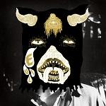
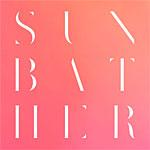
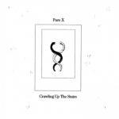
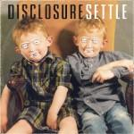
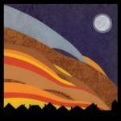
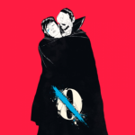
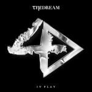

Music Reviews
-

Portugal, the Man Evil Friends
What does including producer Danger Mouse do for perennial oddballs Portugal, the Man?
John Grimley steps willingly down the rabbit hole... -

Rogue Wave Nightingale Floors
Zach is back! I just wanted to say that.
Alan Shulman reviews... -

Sonny & the Sunsets Antenna to the Afterworld
The madcap Bay Area musician/playwright reassembles the Sunsets for another bizarre journey, a spaced-themed concept album that expands on his peculiarities with a send-up to the days of sci-fi schlock.
Juan Edgardo Rodríguez would love to meet a cyborg... -

Deafheaven Sunbather
As the pink cover might suggest, Deafheaven are no longer worried about being a black metal band, and this willingness to draw open the ceiling and let in the sun allows Sunather to become something far more significant.
Peter Quinton sees the light... -

Pure X Crawling Up The Stairs
After experiencing something of an annus horribilis in 2012, Texas trio Pure X are back with their second album of dreamy noise pop.
Pure ectasy or pure excess? -
The Teardrop Explodes Wilder
The second and final Teardrop Explodes album, 1981's Wilder, receives the deluxe re-issue treatment.
D.C. Harrison revisits... -

Disclosure Settle
The dance record we have all been waiting for has finally arrived. Does it live up to the hype?
Forrest Cardamenis refuses to... -

Nancy Elizabeth Dancing
After four years of general silence, Nancy Elizabeth has returned with a third album that's suitably quiet. So quiet in fact that, despite the title, it's probably not the best choice of music to dance to.
Not that it matters to Mark Davison, as he has two left feet... -

Queens of the Stone Age ...Like Clockwork
The band's latest album is likely among their most difficult to create, with Josh Homme having gone through a near-death experience before recording it. Despite, or maybe due to these tough circumstances, Queens of the Stone Age have recorded one the best albums of their career.
Joe Marvilli will keep his eyes peeled... -

The-Dream IV Play
Many years and delays later, The-Dream finally releases studio album number IV.
Radio Killllllllaaaa...